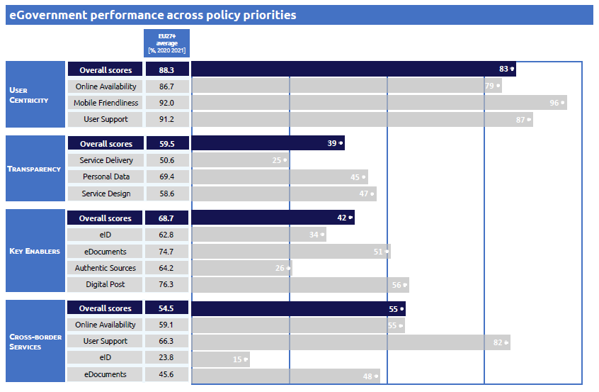
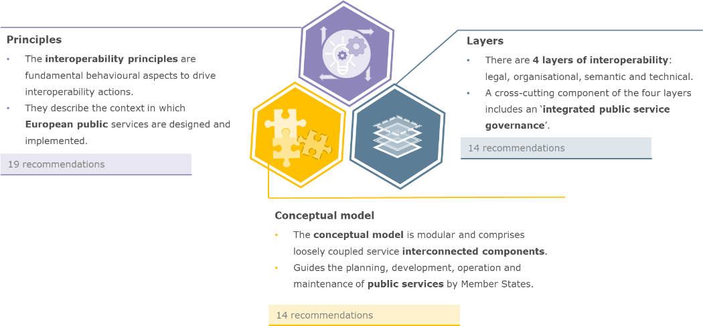

Digital Public Administration factsheet 2021
Switzerland
Digital Public Administration factsheet 2022
Table of Contents
2 Digital Public Administration Highlights 10
3 Digital Public Administration Political Communications 12
4 Digital Public Administration Legislation 19
5 Digital Public Administration Governance 24
6 Digital Public Administration Infrastructure 27
7 Cross-border Digital Public Administration Services 35
Country
Profile
1
Country Profile
Digital Public Administration Indicators
The following data present the latest Generic Information Society Indicators for Switzerland. Statistical indicators in this section reflect those of Eurostat at the time the Edition is being prepared.
Percentage of individuals using the internet for interacting with public authorities in Switzerland | Percentage of individuals using the internet for obtaining information from public authorities in Switzerland | ||
Percentage of individuals using the internet for downloading official forms from public authorities in Switzerland | Percentage of individuals using the internet for sending filled forms to public authorities in Switzerland | ||
Interoperability State of Play
In 2017, the European Commission published the European Interoperability Framework (EIF) to give specific guidance on how to set up interoperable digital public services through a set of 47 recommendations. The picture below represents the three pillars of the EIF around which the EIF Monitoring Mechanism was built to evaluate the level of implementation of the EIF within the Member States. It is based on a set of 71 Key Performance Indicators (KPIs) clustered within the three main pillars of the EIF (Principles, Layers and Conceptual model), outlined below.
Source: European Interoperability Framework Monitoring Mechanism 2021
Source: European Interoperability Framework Monitoring Mechanism 2021
Source: European Interoperability Framework Monitoring Mechanism 2021
Source: European Interoperability Framework Monitoring Mechanism 2021
eGovernment State of Play
The study evaluates online public services on four dimensions:
- User centricity: indicates the extent to which a service is provided online, its mobile friendliness and its usability (in terms of available online support and feedback mechanisms).
- Transparency: indicates the extent to which governments are transparent about (i) the process of service delivery, (ii) policy making and digital service design processes and (iii) the personal data processed in public services.
- Cross-border services: indicates the extent to which users of public services from another European country can use the online services.
- Key enablers: indicates the extent to which technical and organizational pre-conditions for eGovernment service provision are in place, such as electronic identification and authentic sources.
The 2022 report presents the biennial results, achieved over the past two years of measurement of all nine life events used to measure the above-mentioned key dimensions. More specifically, these life events are divided between seven ‘Citizen life events’ (Starting a small claim procedure, Moving, Owning a car, Health measured in 2021, and Career, Studying, Family life, measured in 2020) and two ‘Business life events’ (Regular Business Operations, measured in 2021, and Business start-up, measured in 2020).
Source: eGovernment Benchmark Report 2022 Country Factsheet
Digital Public Administration Highlights
2
Digital Public Administration Highlights
Digital Public Administration Political Communications |
The Federal Department of Environment, Transport, Energy and Communications (DETEC) drew up a concept and an action plan to support the towns and the cities, the municipalities and the cantons in the development of Smart Cities, Smart Villages and Smart Regions.
 | Digital Public Administration Legislation |
Digital Public Administration Governance |
|  | Digital Public Administration Infrastructure |
The Data Science Competence Centre (DSCC) is a service provider within the federal administration and as such, provides data science services and expertise to the entire Swiss public sector and administration (Confederation, cantons and communes). The competence centre builds on the existing synergies of an interconnected network of academic partners, in close collaboration with the public research and development sector, to provide state-of-the-art data science expertise.
The eGovernment portal of the Federal Department of the Environment, Transport, Energy and Communications (DETEC) has been upgraded with new services offered by DETEC and the cantons to the population, companies and other organisations. Users can easily interact with government authorities – anytime and anywhere in the world. Over the next few months and years, DETEC will be adding even more services to its eGovernment portal.
Digital Public Administration Political Communications
3
Digital Public Administration Political Communications
Specific political communications on digital public administration
eGovernment Strategy (2020–2023)
In this context, the new mission statement is ‘Digital First’. The aim is for the authorities to offer their information and services electronically by default, and wherever possible adapt them for use on mobile devices. They will improve access to their electronic service offering, ensure their accessibility and rely on end-to-end electronic processes, while safeguarding the right to informational self-determination.
Seven principles act as guidelines for projects under the future strategic implementation plan:
- Services and information tailored to the target audience;
- Automated and integrated processes;
- Common data management;
- Openness and transparency;
- Exchange and cooperation;
- Standardisation and interoperability; and
- Promotion of innovation and monitoring of technology.
They form the framework for implementing the activities to be undertaken in the four areas of action, which are (i) interaction and participation; (ii) basic services and infrastructure; (iii) organisation and legal framework; and (iv) trust and knowledge.
Federal Administration’s Information and Communication Technology Strategy (2020–2023)
The new 2020–2023 Federal Information and Communication Technology (ICT) Strategy was adopted by the former Federal Information Technology (IT) Steering Unit, with the involvement of the departments and the Federal Chancellery. It focuses on aligning federal IT with business needs and supporting the administrative business in the digital transformation.
The strategy was approved by the Federal Council in April 2021. The first programme ran from 2007 until 2011. The following Federal ICT Strategy was launched in 2012 and lasted until the end of 2015. The third Federal ICT Strategy was adopted by the Federal Council on 4 December 2015 and covered the period 2016–2019.
Interoperability
Swiss eGovernment Architecture Project
The implementation of the Swiss eGovernment Strategy is supported by the Swiss eGovernment Architecture Project (eGovCH), which develops standards and architectures to promote electronic cooperation across administrations in the country at all levels. The project revolves around four axes:
- Standardisation instruments, such as the Swiss eGovernment Standards Agency (eCH), which creates and promotes eGovernment standards throughout Switzerland;
- Reference architectures, which facilitate the work of planners and implementers of eGovernment solutions;
- eGovernment standardisation, which evolves in two directions: eCH-0014 - SAGA.ch, which defines technological standards and basic architectures for applications in Switzerland; and eCH-0018- XML Best Practices, which describes how XML schemes can be created for use in the Swiss eGovernment;
- Instruments for strategic IT planning, such as the eCH-0015 - Inventory of Official Processes; and
- eCH-0145 of the Swiss public administration, which regulates the planning and management of the activities of political bodies and administrations, the interfederal/interdepartmental understanding, as well as the cooperation and communication with politics, the population and the economy.
eGovernment Architecture
The eGovernment Architecture creates the prerequisites that enable the Confederation, the cantons and the municipalities to produce building blocks independently, which, together, result in a functioning eGovernment offer. Moreover, it is easily accessible for clients and can be used efficiently.
The implementation plan contains various implementation objectives and measures related to systems and organisations, both existing and yet to be created. The aim is to ensure that the measures in the implementation plan are managed in accordance with the overall architecture, in order to identify dependencies and interfaces at an early stage.
The required architectural elements, systems and domains are in the process of being reviewed and defined. The dependencies must be shown and an architectural view of the implementation plan projects will be established. The architecture is adapted cyclically and managed according to the requirements of the Open Group Architecture Framework (TOGAF).
Based on the 2020–2023 Implementation Plan, a target architecture is being developed for the current strategy period, focussing on new elements that will be created by the end of 2023 and incorporated into the overall architecture. These elements, which are part of the implementation objectives and influence, complete and extend the eGovernment system or landscape (systems, standards, concepts, architectures, etc.), are the following:
- Portal architecture;
- Electronic identification (eID) system;
- National data infrastructure;
- Register for the public; and
- eCH standards.
Building on them and on the basis of the 2050 long-term vision, the next step in the expansion of the Swiss eGovernment environment will be defined and included in the future strategy.
Key enablers
Access to public information
eID and Trust Services
In order to simplify electronic dealings with the authorities and to make them more user-friendly, an identity network is to be established. It will ensure a uniform registration procedure on the various authorities’ portals.
Validator for Digital Documents
To increase the acceptance of electronically signed documents among recipients, electronic signature validation has become a requirement in order to give the possibility of checking the authenticity and integrity of the document received. Therefore, a Signature Validator has been made available to the recipients of electronically signed (official) cantonal documents. In 2018, a similar validator was established for the authorities and its usage in cantonal (and municipal) administrations is encouraged.
Security aspects
Interconnection of base registries
No political communication was adopted in this field to date.
eProcurement
eProcurement Strategy of the Confederation
The Federal Procurement Commission approved the eProcurement Strategy in 2008.The strategic document, which has proven increasingly influential in both the private and public sector, listed the guidelines, requirements, and technical, organisational and policy‑based challenges in the implementation process.
Domain-specific political communications
DaziT Transformation Programme (2018–2026)
With the DaziT modernisation and transformation programme, the Swiss Customs (FCA) was systematically brought into the digital age. The objective was for border formalities to be completed irrespective of time or place. Businesses, the general public and the administration are already benefitting from major simplifications thanks to continuously digitised processes.
The DaziT programme was officially launched on 1 January 2018 and spans from 2018 to 2026. It is being carried out in stages. From 2023, the FCA’s administrative costs in the affected areas will be reduced thanks to a productivity increase of about 20%.
Support Processes
On 13 December 2019, the Federal Council published a message regarding the modernisation of the support processes of the federal administration and the systems of the Federal Department of Defence, Civil Protection and Sport (DDPS). It proposed two programmes for implementing the modernisation process, and the harmonisation and standardisation of support processes within the federal administration.
Smart Cities, Smart Villages and Smart Regions
The Federal Department of Environment, Transport, Energy and Communications (DETEC) drew up a concept and an action plan to support the towns and the cities, the municipalities and the cantons in the development of Smart Cities, Smart Villages and Smart Regions.
Emerging Technologies
Artificial Intelligence
AI Report
The AI Report, prepared under the leadership of the Federal Department of Economics, Education and Research (WBF) and presented to the Federal Council, has been the basis for drawing up the strategic guidelines on the topic.
Together with the FSO, the Digital Transformation and ICT Steering Sector (DTI) is to prepare a feasibility study on a joint competence network for the promotion and application of AI in the federal administration.
Distributed ledger technologies
Distributed Ledger Technology and Blockchain
On 27 November 2019, the Federal Council published a report relating to the further improvement of the federal legal framework governing the blockchain, fintech and other distributed ledger technologies (DLTs). The report focused on increasing legal certainty, removing obstacles which hamper applications based on DLT and limiting the risks of abuse.
Big data
No political communication was adopted in this field to date.
Cloud computing
Cloud Computing Strategy of the Swiss Authorities (2012–2020)
The Cloud Computing Strategy complements the aforementioned eGovernment Strategy and is a result of the eGovernment project ‘eGovernment Architecture’, as drawn up by the experts from the Confederation, the cantons, the municipalities and the enterprises affiliated to the Confederation. It describes how the Swiss authorities intend to deal with newly emerging possibilities and what measures should be taken. It was approved by the eGovernment Steering Committee on 25 October 2012. The strategy was complemented by a catalogue of measures to attain its objectives up until 2020.
In December 2020, a new Strategy on Cloud Computing was approved by the government. By adopting this strategy, the Federal Council is aiming for a secure, efficient and orderly use of cloud services in the federal administration. In the future, IT services will need to be obtainable both from the private clouds of federal government service providers and from public clouds.
The Strategy on Cloud Computing takes into account the possible use of a Swiss cloud computing system (Swiss Cloud), which would allow possible requirements of the federal administration to be met in order to improve data sovereignty and minimize dependence on international cloud service providers.
Internet of Things (IoT)
No political communication was adopted in this field to date.
High-performance computing
No political communication was adopted in this field to date.
High-speed broadband connectivity
No political communication was adopted in this field to date.
Digital Public Administration Legislation
4
Digital Public Administration Legislation
Specific legislation on digital public administration
Legislation on eGovernment in the Cantons
In various cantons, special laws have been adopted on eGovernment or on the public portals of the authorities.
Public-law Framework Agreement on Digital Public Services Switzerland
The Confederation and the cantons, as equal sponsors of the DPSS, approved the public-law framework agreement on Digital Public Services Switzerland at the Plenary Assembly of the CCG on 23 September 2021 and at the Federal Council meeting on 24 September 2021. The ratification of the framework agreement by the cantonal governments was approved on 17 December 2021 at the Plenary Assembly of the CCG.
The objective of the DPSS is to ensure effective strategic steering and coordination of federal, cantonal and communal digitalisation activities.
Interoperability
No legislation was adopted in this field to date.
Key enablers
Access to public information
Freedom of Information in the Administration Act
The Freedom of Information in the Administration Act (2004) seeks to promote transparency with regard to the mandate, organisation and activities of the administration. To this end, it contributes to informing the public by ensuring access to official documents. It was passed by the Federal Assembly on 17 December 2004 and came into force in July 2006.
Reuse of Public Sector Information
The provisions of the EU directive on the reuse of public sector information (PSI) (2003/98/EC) are covered by the Freedom of Information in the Administration Act and the Federal Act on Data Protection.
eID and Trust Services
Federal Law on Certification Services in the Area of Electronic Signature
The Federal Law on Certification Services in the Area of Electronic Signature (ZertES) came into force on 1 January 2005. It defined the conditions under which certification service providers could be recognised on a voluntary basis and their activities in the field of electronic certificates could be regulated. Moreover, it stipulated the requirements that an electronic signature must fulfil to achieve the same status as its hand-written alternative. Additionally, it regulated the question of responsibility on the part of the certification service providers, the approving bodies and the owners of signature keys.
The Federal Validator is a signature verification service that allows users with an electronic signature to check documents held by the administrative authorities of each canton, by municipalities and by administrative courts. This service provided by the federal government first became operational on 1 January 2017, with the signature validator coming into operation in the pilot canton of Zug. The Federal Validator is used mainly to validate objections to the administrative court (of the canton of Zug), tax declarations, criminal reports to the police (of the canton of Zug), as well as electronically submitted decisions and orders, in particular electronically submitted residence confirmations. The Federal Validator is open for all cantons and municipalities, not only those in the canton of Zug.
Federal Act on Electronic Identification Services
The legal framework for a secure identification solution for online services has been in place since autumn 2019. In the final vote, the Parliament approved the Federal Act on Electronic Identification Services (eID Act), which stipulates that the State and the private sector are to share tasks. While Swiss companies are to provide the means of authentication for eID, the State is responsible for providing and confirming an individual’s identity, as well as for the legal requirements and the supervision of private providers. This solution is open to technology, and can react flexibly to rapidly changing needs and technologies.
On 7 March 2021, however, in a popular vote on the eID Act, 64% of the voters rejected it due to the involvement of private companies in the development of eID services.
Security aspects
Federal Act on Data Protection
The Federal Act on Data Protection, approved on 19 June 1992 and entered into force on 1 July 1993, aimed to protect the privacy and fundamental rights of Swiss nationals when their data are processed by State entities. It applied to the processing of data pertaining to natural persons and legal entities by federal bodies and private persons. The majority of Swiss cantons introduced similar legislation to govern public sector data collection and processing in their respective localities. The Federal Council’s update of the former Ordinance on Data Protection entered into force on 1 November 2016. Swiss law was deemed adequate and approved by the EU in 2000.
In addition, almost every Swiss company has to comply with the EU data protection law.
Interconnection of base registries
Commercial Registry
The Commercial Registry is regulated under the Order of 17 October 2007 on the Commercial Registry, which describes the purpose of the registry as the constitution and the identification of legal entities. It aims to record and publish the legally relevant facts, and to ensure legal certainty and the protection of third parties under mandatory provisions of law. A complete list of the legal bases for the Commercial Registry can be accessed via the Federal Office of Justice Portal.
Land Registry
The Land Registry is guided by the Order of 23 September 2011 on the Land Registry, which defined the registry as a public registry for real estate rights, annotations and references, consisting of the ledger, the chronological report of the processing of land register operations, the plan of the Land Registry and vouchers (Article 2).
Another important piece of legislation affecting the Land Registry, the Order of 18 November 1992 on the Cadastral Survey, referred to measurements approved by cantons and recognised by the Confederation executed for the establishment and maintenance of the Land Registry. This data is used by the Federation, the cantons and the municipalities, economic circles, academia, and others to obtain geo‑information. Cadastral surveying was regulated by the Order of 21 May 2008 on Geo-Information, unless otherwise provided in this Order.
Population Registry
The Population Registry is regulated by the Law on Population Registration (EMG) of 15 June 2010 (status 1 January 2018). Its purpose was to regulate the census records and the recording system, as well as the legally provided exchange of personal information between the Population Registry and other official registries of persons.
Another law concerning the Population Registry is the Federal Law on the Harmonisation of the Population Registry and other Official Registries of Persons, which aims to simplify the data collection for statistical purposes by harmonising registries of persons and the exchange of data between the registries. It establishes the identifiers and characteristics to be included in the records, the competencies of the FSO relating to uniform standards, the characteristics and terms, the principle of completeness and accuracy of records, and the obligation to update the registries of residents.
eProcurement
Ordinance on Public Procurement
The Ordinance on Public Procurement came into force on 1 January 2007 and included provisions for electronic public procurement. A revised version was approved by the Federal Council on 18 November 2009 and entered into force on 1 January 2010. The most recent version dates from February 2020.
The IT in Public Procurement Service within the DTI coordinates initiatives on digital transformation regarding procurement and is involved in various projects and bodies at national and international level.
Domain-specific legislation
eCommerce Legislation
There is no specific law for eCommerce, but aspects of eCommerce are covered by the Federal Law on Certification Services in the Area of Electronic Signature (ZertES), adopted in 2004 and last amended in 2011. As a result, eCommerce operations in Switzerland can be complex from a legal standpoint and require specialised legal assistance.
Federal Telecommunications Law
The Federal Telecommunications Law was originally adopted on 30 April 1997 and subsequently amended by the Federal Assembly on 24 March 2006 before entering into force on 1 April 2007. Amendments included the law itself and the adoption of the Radio and Television Act in 2006.
Emerging technologies
Artificial Intelligence (AI)
No legislation was adopted in this field to date.
Distributed ledger technologies
Distributed Ledger Technology and Blockchain
On 27 November 2019, the Federal Council published a report on the adaptation of federal law to developments in the technology of electronic distributed registries and the DLT. With this draft law, conceived as a single amending act, ad hoc adaptations were proposed for nine federal laws affecting both civil and financial market law. This bill will increase legal certainty, remove obstacles for DLT-based applications and limit the risk of abuse.
One of the proposal’s key areas is the amendment of securities law. It will provide a secure legal basis for the trading of rights through electronic registries. Furthermore, the segregation of crypto-based assets in the event of bankruptcy will be clarified by law. Finally, a new licence category for DLT trading systems will be established in financial market infrastructure law, thereby creating a flexible legal framework for new forms of financial market infrastructure.
On 25 September 2020, the Parliament unanimously adopted the bill. On 11 December 2020, the Federal Council brought into force, with effect from 1 February 2021, the parts of the DLT bill that enable the introduction of ledger-based securities. In addition, from that date on, the Ombudsman affiliation requirement applies only to those financial service providers that serve private clients. The remaining provisions of the DLT bill will probably enter into force on 1 August 2021.
Big data
No legislation was adopted in this field to date.
Cloud computing
No legislation was adopted in this field to date.
Internet of Things (IoT)
No legislation was adopted in this field to date.
High-performance computing
No legislation was adopted in this field to date.
High-speed broadband connectivity
No legislation was adopted in this field to date.
Digital Public Administration Governance
5
Digital Public Administration Governance
National
Digital Transformation and ICT Steering
Swiss eGovernment Architecture Community
The Swiss eGovernment Architecture Community (SEAC) brings together industry, government authorities and academia, and aims to set guidelines for next-generation IT architectures in the Swiss public sector. It is tasked with supporting, among other targets, the electronic handling of all communications between businesses and public bodies, as well as the electronic information exchange among public bodies.
Federal Office of IT, Systems and Telecommunication
The Federal Office of IT, Systems and Telecommunication (FOITT) is a key provider of IT and telecommunication services to the Swiss federal administration. Its main role is to ensure that the communications equipment and IT applications within the administration function optimally. As required by the IT Council, it also provides interdepartmental services to the entire federal administration, particularly in the areas of internet access and messaging, SAP, operational security and telecommunications.
Moreover, on 13 December 2019, the Federal Council published a message regarding the modernisation of the support processes of the federal administration and the systems of the Federal Department of Defence, Civil Protection and Sport. It proposed two programmes for implementing the modernisation process, and the harmonisation and standardisation of support processes within the federal administration.
eCH
ICTswitzerland – ePower and Parldigi
eOperations
Data Science Competence Centre
On 13 May 2020, the Federal Council decided to create a national Data Science Competence Centre. This centre will support the federal administration in solving complex tasks. It will promote the transfer of knowledge within the Confederation and encourage exchanges with the scientific community, research institutes and bodies responsible for practical application. In particular, this competence centre will contribute to producing transparent results while respecting data protection.
Working group on artificial intelligence
Subnational (federal, regional and local)
Conference of the Cantonal Governments
The Conference of the Cantonal Governments (CCG) brings together the cantonal governments and encourages cooperation among the cantons in their fields of competence, as well as on federal matters relevant to the cantons. Its more general role is to coordinate the availability of relevant information to the cantons, such as the implementation of the eGovernment Strategy until late 2011. The CCG is regularly informed of such efforts through the cantonal representatives on the Steering Committee.
Cantonal Directors’ Conference
Digital Public Administration Infrastructure
6
Digital Public Administration Infrastructure
Portals
National Portals
Swiss Portal
The portal contains the following sites:
- ch.ch: the website is the main part of ch.ch. Here users can find information about political rights and what is required of Swiss nationals;
- ch.ch – publicjobs: it is the national job portal for the public administration. It is run by the Kantonale Drucksachen- und Materialzentrale Zürich (KDMZ) on behalf of the Federal Chancellery and forms part of ch.ch;
- ch.ch – Blog: the blog enables discussion about ch.ch with the users. Needs, expectations and technology are constantly changing and ch.ch wants to keep up with its users; and
- ch.ch on Facebook, Twitter and YouTube: ch.ch uses Facebook, Twitter and other social media to communicate with users who also use these services. All information and services provided on ch.ch can, however, be accessed independently through the ch.ch website.
Swiss Federal Authorities’ Portal
SME Portal
The sme.admin.ch portal provides a wide range of information and online tools for small and medium-sized enterprises (SMEs), ranging from the start-up phase and succession planning to business management.
Debt Enforcement Portal
Simap.ch
The total revision of the Federal Law on Public Procurement (LMP/OMP) which entered into force on 1 January 2021 caused some modifications on forms. In general, the revision strengthens competition and makes procurement processes more flexible and modern. Important innovations are (i) the strengthening of sustainability and the prevention of corruption; (ii) the principle of quality competition instead of price competition; (iii) the expansion of legal protection; (iv) the modification of language standards, framework agreements, electronic procurement and electronic auctions; and (v) shorter deadlines.
Opendata.swiss
EasyGov.swiss
EasyGov.swiss is a secure and reliable platform which allows companies to electronically process authorisation, application and reporting procedures from a single location. On the platform, companies can manage all the administrative procedures offered via a single account (single sign-on) with uniform user guidance. Private service providers, such as fiduciaries or notaries, can also use EasyGov.swiss to handle official matters on behalf of a company. Regularly required company data, such as the commercial registry number or address data, need to be entered only once or can be imported from registries (Once-Only principle).
This portal relieves and saves costs – both for companies and the authorities. Version1.0 of the EasyGov.swiss platform was launched on 6 November 2017. By the end of 2018, 21 government services were available on the portal, with more than 9 000 registrations. The most sought‑after authority services have been available since the end of 2019. The platform currently provides the following authority services:
- Company foundation;
- Registration with the old-age and survivors’ insurance, VAT and accident insurance; and
- Registration and changes to the Commercial Registry.
By the end of 2019, the platform also expanded its online services to include the following: submissions to Debt Enforcement Offices and salary data entry for salary declarations. The number of services provided will be extended in the coming years.
EasyGov.swiss works through guided dialogue with questions and entered responses. The approximate duration of an application or amendment is displayed at the beginning. Once logged in, the cockpit gives an overview of all the administrative procedures the user has already dealt with for his/her company on EasyGov.swiss. It also gives information on completed processes and on those that are still being handled. The use of EasyGov.swiss is free. However, subsequent costs may arise, for example an entry fee for the Commercial Registry, VAT on turnover or social security contribution percentages on revenue.
VAT Transactions Portal
The VAT Transactions Portal allows online deadline extensions, requests for settlement of accounts according to received fees, statements of subordination and balance tax rate methods, for exclusive use of businesses.
Online Desk for Swiss Nationals Residing Abroad
With the Online Desk, Swiss nationals residing abroad have the possibility to access consular services, such as registering in the Swiss Abroad Registry, notifications of changes of civil status, changes of address, etc. It aims to reach citizens and businesses.
eMovingCH
eVoting
eVoting was offered in ten cantons until early 2019. At that time, the cantons had two eVoting systems they could choose: that of the canton of Geneva and that of Swiss Post. Based on its decision of November 2018, the canton of Geneva announced in June 2019 that its system would no longer be available with immediate effect. In addition, Swiss Post announced on 5 July 2019 that its individually verifiable system would no longer be available to the cantons.
The Federal Council instructed the Federal Chancellery to plan a reorientation of the eVoting trial with the cantons by the end of 2020. The aim was to establish a stable trial operation using the latest-generation systems. This includes the further development of systems, the expansion of independent controls, the strengthening of transparency and trust, as well as increased scientific involvement. Starting from December 2020, after a redesign of the trial phase, cantons are again permitted to run limited trials with online voting.
eVAT
As of 1 January 2021, there are two options for settling VAT online: the ESTV SuisseTax Portal and the ‘VAT invoicing easy’ service. In accordance with the eGovernment Strategy, they will replace paper-based accounting. ESTV SuisseTax is the full online version of the service with all the functionalities currently available. More than 60% of taxable persons already use this option successfully. ‘VAT invoicing easy’ is the new online service using a simplified online form, without individual account and with a simple registration. In addition, tax representatives may optionally make use of a declaration approval, i.e. a document that the taxable person signs - for the acceptance of the tax representative’s declaration submitted electronically - and sends to the Federal Tax Administration by mail.
Creation of National Address Services
Subnational Portals
iGovPortal.ch
The cantons of Jura and Fribourg created in 2017 a portal infrastructure that could be used by various authorities in several languages. The result is the iGovPortal.ch Association. As of February 2021, five cantons were listed as members of the portal: Fribourg, Grisons, Jura, Saint-Gall and Soleure.
Elections Results Portal
The three cantons of Grisons, Schwyz and Zug have developed together an online portal for publishing the results of elections and votes.
eHealth and CARA Association
After the cantons of Geneva, Valais and Vaud, the cantons of Fribourg and Jura also officially joined the CARA Association. The five cantons came together to form a community offering access to patients’ electronic files. They have put a common eHealth platform at the disposal of healthcare providers and their population, with a potential pool of two million people. The cantons of Geneva and Vaud cooperated with the Post Office and entrusted the technical implementation to all the member cantons. The platform has been available since the end of 2019.
Networks
Trans European Services for Telematics between Administrations
Data Exchange
Sedex
eID and Trust Services
ID Cards
Until further notice, the Swiss ID card will continue to be issued in the form of a plastic card bearing a photograph, without a chip or electronically stored data.
SwissID, Mobile ID and eID
A new generation of digital identity – SwissID – has been available since spring 2017. The new SwissID replaces SuisseID, which was discontinued as of December 2021.
- Mobile ID is a joint solution of various Swiss mobile service providers and allows two-factor authentication. It is used as a login or as an authorisation method, e.g. to release a transfer from one bank account to another. A request is sent to the mobile phone in the form of a text message and confirmed by entering the Mobile ID PIN;
- A State-approved digital identity (eID), the introduction of which was approved by the National Council on 20 March 2018. The federal government is responsible for the identification of a person. The eID is valid nationally and internationally and is issued by private providers, the so-called Identity Providers (IdP). On 7 March 2021, the Swiss electorate voted on the Federal Act on Electronic Identification Services (e-ID Act).
Public Key Infrastructure
On 1 January 2005, the legal regulations on the electronic signature (ZertES, VzertED and the corresponding amendments) entered into force. This meant that the ZertES-compliant electronic signature was considered legally equivalent to a handwritten signature, anchoring in law the accountability of the owner of the signing key. Recognition of the respective certification service provider resided with a certification service that met the requirements of the law. FOITT provided its admin public key infrastructure (PKI) solution, a security service for the Confederation and the cantons. FOITT was recognised by all cantons and by the Swiss Information Technology Conference (SITC) as the leading provider of digital certificates.
Digital Documents Validator
In order to increase the acceptance of electronically signed documents among recipients, a way of checking the authenticity and integrity of the document received is needed. This is where signature validation comes in. A signature validator should be made available to the recipients of electronically signed (official) cantonal documents.
eProcurement
simap.ch
Federal Finance Administration
ePayment
No particular infrastructure in this field was reported to date.
Knowledge Management
No particular infrastructure in this field was reported to date.
Cross-border platforms
EU Initiatives
Base registries
Personal Civil Status Registry
Emerging Technologies
Artificial Intelligence (AI)
Competence Network for Artificial Intelligence
The creation of a Competence Network for Artificial Intelligence (CNAI) is expected to foster the use of and confidence in AI and other new technologies within and outside the federal administration in a sustainable way. This network also makes it possible to draw on broad expert knowledge and ensures that knowledge gained from AI projects can be shared within the federal administration, that synergies can be used and redundancies avoided. The concrete business case for a possible AI-based solution will always come from the administrative units concerned.
The interdepartmental CNAI working group consists of representatives from the FSO, the Federal Chancellery, the federal administration’s Swiss Digital Organisation (DVS), the Coordinating Agency for Federal Geographic Information (GCG) and the Federal Department of Defence, Civil Protection and Sport (DDPS). They take care of the concrete implementation of the CNAI and the establishment of the unit, which is located within the Federal Statistical Office. This dynamic working group helped to ensure that high-quality results were achieved very quickly, meaning that the CNAI could commence its operations at the start of 2022. The motto “think big, start small, start fast” was at the forefront of its development. In the future, the CNAI will continue to develop interdepartmentally in line with this motto.
Distributed ledger technologies
No particular infrastructure in this field was reported to date.
Big data
Data Science Competence Centre
The Data Science Competence Centre (DSCC) was created in January 2021 and is a service provider within the federal administration and as such, provides data science services and expertise to the entire Swiss public sector and administration (Confederation, cantons and communes). The DSCC builds on the existing synergies of an interconnected network of academic partners, in close collaboration with the public research and development sector, to provide state-of-the-art data science expertise.
Cloud computing
No particular infrastructure in this field was reported to date.
Internet of Things (IoT)
No particular infrastructure in this field was reported to date.
High-performance computing
No particular infrastructure in this field was reported to date.
High-speed broadband connectivity
No particular infrastructure in this field was reported to date.
Cross-border
Digital Public Administration Services
7
Cross-border Digital Public Administration Services
Further to the information on national digital public services provided in the previous chapters, this final chapter presents an overview of the basic cross-border public services provided to citizens and businesses in other European countries. Your Europe is taken as reference, as it is the EU one-stop shop which aims to simplify the life of both citizens and businesses by avoiding unnecessary inconvenience and red tape in regard to ‘life and travel’, as well as ‘doing business’ abroad. In order to do so, Your Europe offers information on basic rights under EU law, but also on how these rights are implemented in each individual country (where information has been provided by the national authorities). Free email or telephone contact with EU assistance services, to get more personalised or detailed help and advice is also available.
Life and Travel
For citizens, the following groups of services can be found on the website:
- Travel (e.g. Documents needed for travelling in Europe);
- Work and retirement (e.g. Unemployment and Benefits);
- Vehicles (e.g. Registration);
- Residence formalities (e.g. Elections abroad);
- Education and youth (e.g. Researchers);
- Health (e.g. Medical Treatment abroad);
- Family (e.g. Couples);
- Consumers (e.g. Shopping).
Doing Business
Regarding businesses, the groups of services on the website concern:
- Running a business (e.g. Developing a business);
- Taxation (e.g. Business tax);
- Selling in the EU (e.g. Public contracts);
- Human Resources (e.g. Employment contracts);
- Product requirements (e.g. Standards);
- Financing and Funding (e.g. Accounting);
- Dealing with Customers (e.g. Data protection).
The Digital Public Administration Factsheets
The factsheets present an overview of the state and progress of Digital Public Administration and Interoperability within European countries.
The factsheets are published on the Joinup platform, which is a joint initiative by the Directorate General for Informatics (DG DIGIT) and the Directorate General for Communications Networks, Content & Technology (DG CONNECT). This factsheet received valuable contribution from Irem Kaynarca (General Secretariat Federal Department of Finance).
The Digital Public Administration factsheets are prepared for the European Commission by Wavestone.
An action supported by Interoperable Europe
Interoperable Europe will lead the process of achieving these goals and creating a reinforced interoperability policy that will work for everyone. The initiative is supported by the Digital Europe Programme.
Follow us
Interoperable Europe